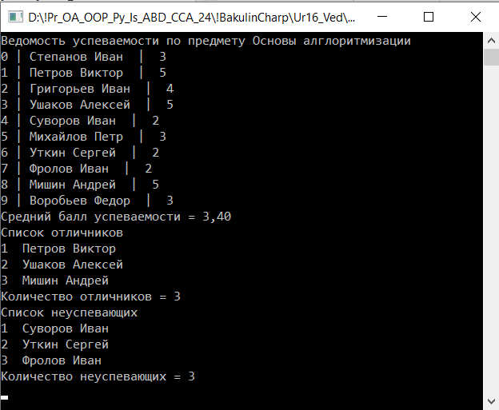
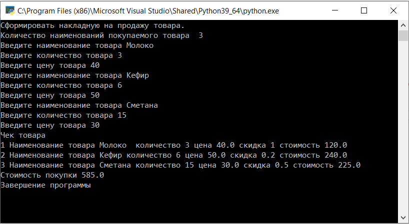

| Контрольная работа 2 Записи. | ||
| Назад | ||
|
Задача. Создать ведомость успеваемости учащихся по предмету Основы алгоритмизации. Файл подписать фамилия, группа.
 Задача. 2 Создать программу формирование чека на приобретение товара в магазине. В чек включено количество покупок до 5 (определяется вводом с клавиатуры- для тестирования заполнить статически). В чеке имеются поля: Наименование товара, количество покупаемого товара, цена товара, скидка. При количестве покупаемого товара о т 1 до 3 скидка 0%, при количестве покупаемого товара более 3 скидка 20%я

Сформированный чек вывести на консоль и результат записать в файл.
Задача. 3
Решение в Pascal. Составить программу назначения стипендии студентам по
результатам сессии, используя следующие правила (количество
предметов 4, количество студентов 5, данные инициировать явно,
отчет в консоль и файл): |
||
| Конспект подготовлен Бакулиным А. М. 2012 год. | ||